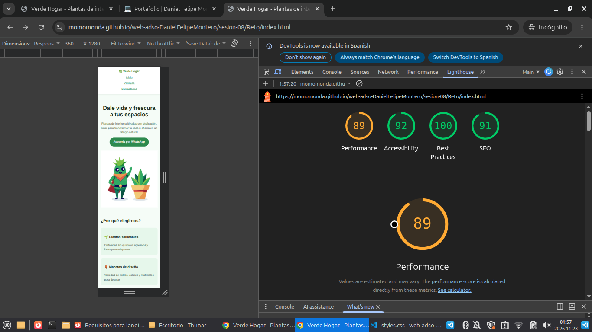
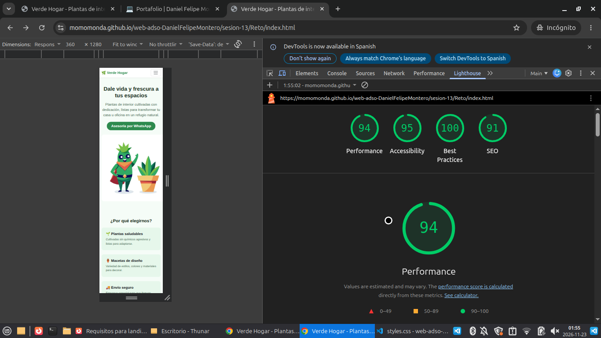

Sesión 8 (CSS Puro)
Rendimiento: 89
- Performance: 89
- · Accessibility: 92
- · Best Practices: 100
- · SEO: 91
CSS Puro (Sesión 8) vs. Bootstrap 5 (Sesión 13)


| Criterio | Sesión 8 (CSS Puro) | Sesión 13 (Bootstrap 5) |
|---|---|---|
| Puntaje de Rendimiento (Lighthouse) | 89 / 100 (Accesibilidad: 92) | 94 / 100 (Accesibilidad: 95) |
| Líneas de CSS propias escritas | ~185 líneas (layout, Flexbox, Grid, botones y media queries manuales). | ~75 líneas (únicamente colores de marca y variables --bs-btn-...). |
| Facilidad para hacerla responsive | Media: requirió escribir @media queries manuales para 768px y 1024px y ajustar cada sección. |
Muy alta: con clases como col-12 col-md-6 col-lg-4 y navbar-expand-md se adaptó al instante. |
| Componentes interactivos | Menú apilado fijo en móvil y enlaces de contacto simples sin validación. | Navbar colapsable (menú hamburguesa) y formulario con validación nativa incluida. |
| Personalización y qué tan única se ve | Control total sobre animaciones (@keyframes), sombras y proporciones exactas. |
Mantiene la identidad visual gracias a las variables de marca, aunque sigue la estructura estándar de tarjetas y grillas de Bootstrap. |
Para el proyecto final utilizaré Bootstrap 5 combinado con una hoja de estilos propia de marca. Como demuestran los resultados de Lighthouse, la versión con Bootstrap no solo alcanzó un mejor rendimiento (94 frente a 89) y mayor accesibilidad (95 frente a 92) gracias a sus atributos ARIA integrados[cite: 7, 8], sino que redujo en más de la mitad el CSS que tuve que escribir y mantener.
Además, para un sistema real con múltiples vistas, formularios validados y navegación móvil, resolver la grilla y los componentes interactivos con Bootstrap permite concentrar el tiempo en la lógica del negocio y la experiencia de usuario, manteniendo una identidad visual propia mediante variables CSS sin depender de estilos genéricos.